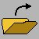

Opening an XML file
Simply choose "Open XML..." from the "File" menu or click on the open icon

button to pop up a dialog to choose an XML file to open. The XML file will then open in a new window and be automatically validated against the Schema.